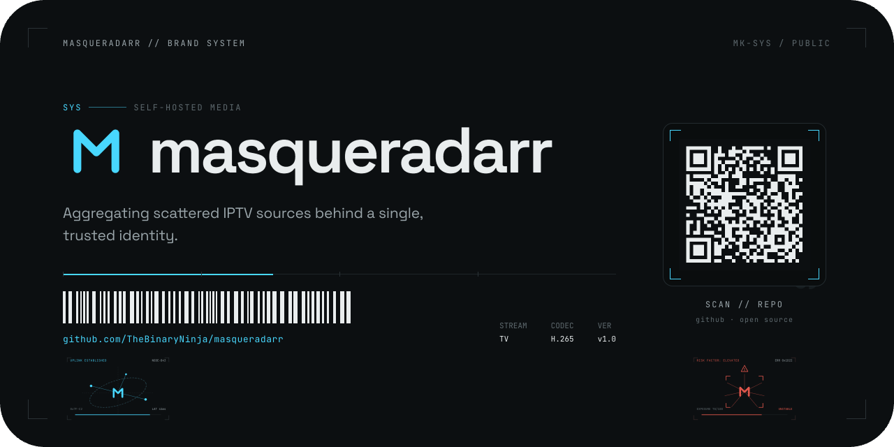
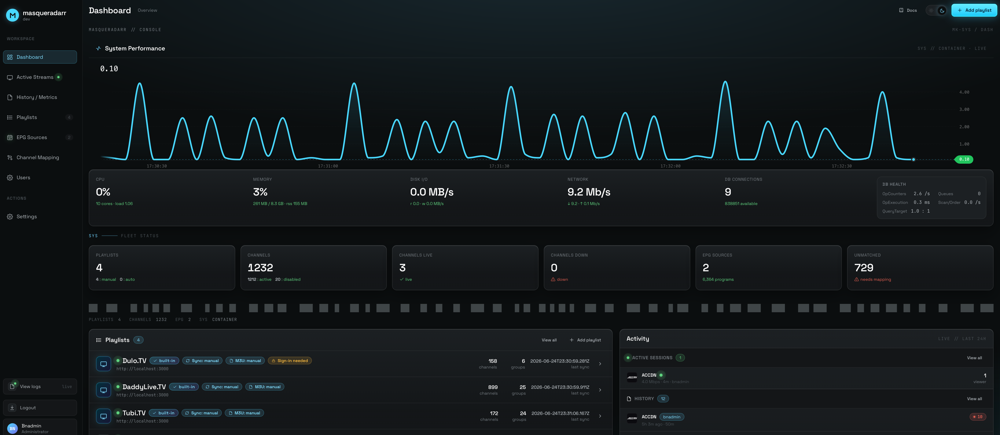
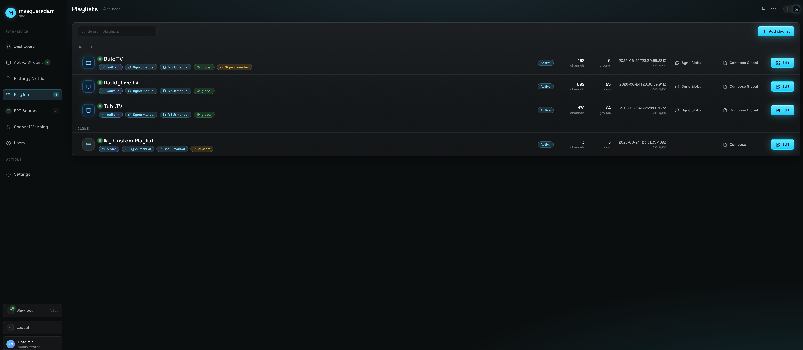
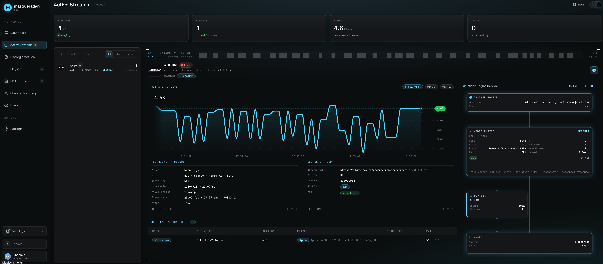
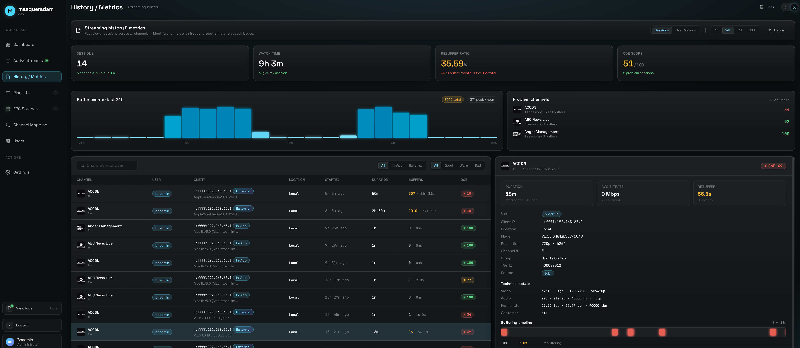
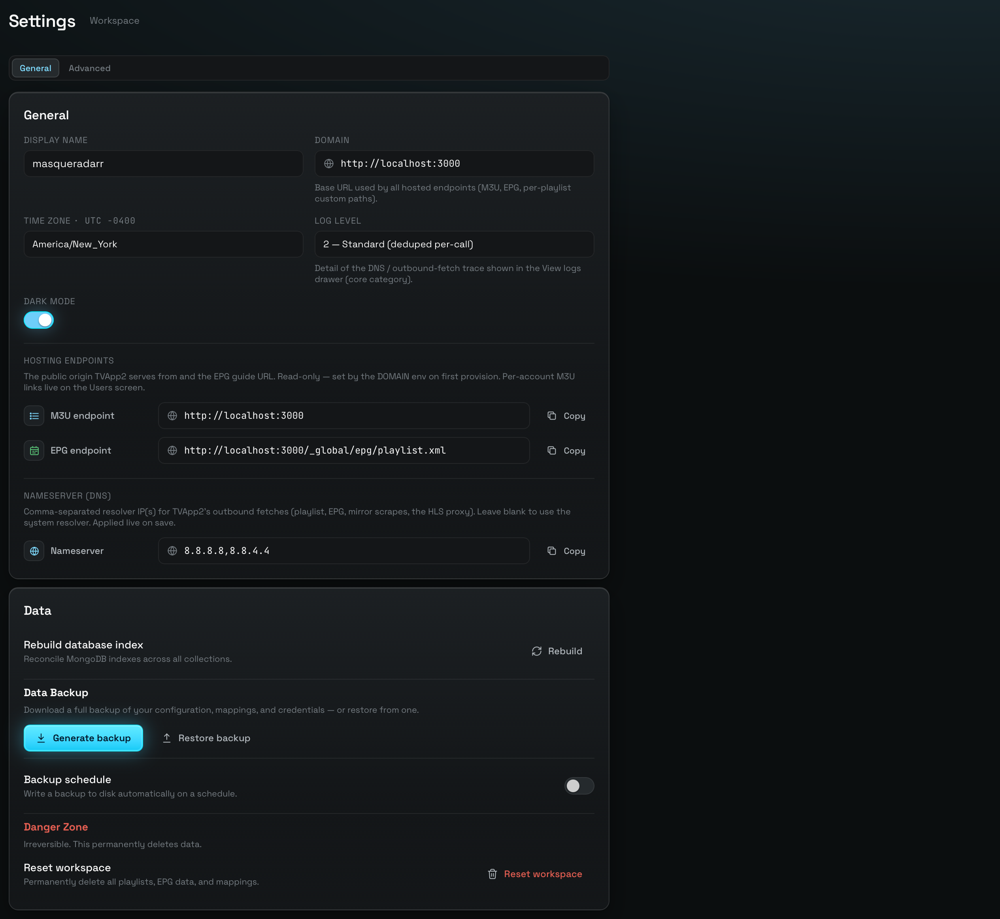

Self-hosted IPTV, aggregated.
Aggregating scattered IPTV sources behind a single, trusted identity.
masqueradarr is a self-hosted IPTV aggregator. It pulls channel playlists (M3U) and guide data (EPG/XMLTV) from a range of online IPTV services, normalizes them into one catalog, and serves them back as a single, unified, standards-compliant playlist + guide — behind one trusted identity that your media apps and IPTV clients can talk to.

Four jobs, one container
masqueradarr is the ground-up successor to TVApp2. Where the original kept static .m3u files fresh, masqueradarr runs a live, resolve-on-demand engine — and wraps it in a real management app.
Many providers → one catalog
Pulls M3U playlists and EPG/XMLTV guides from ~17 provider adapters plus your own URL / file / HDHomeRun imports, and normalizes them into a single, deduplicated channel catalog.
No dead URLs on disk
Every stream is resolved at play time, which is what makes authenticated, token-gated and rotating-mirror sources possible — captured logins, per-play signed URLs, live mirror failover.
One endpoint for every client
An in-app player plus per-user, tokenized .m3u + XMLTV export for TiviMate, VLC, Plex, Jellyfin and Emby — bytes served by a durable Rust proxy engine.
Users, telemetry, schedule
scrypt users with roles and per-user access lists, live viewer/bandwidth telemetry, MongoDB-backed logs, a cron scheduler, and full-system backup / restore.
One picture: clients, the container, the upstreams
Two processes ship in the same container. Your browser and IPTV clients talk to the Express control plane (Node), which owns MongoDB and drives a Rust data-plane sidecar (masq-proxy) that actually moves the stream bytes.
Node is the brains (stateful, provider-specific: logins, scraping, the token gate, telemetry). Rust is the muscle (byte work, driven per-stream by a "grant" from Node). The same diagram, explained from never-heard-of-IPTV, opens the Concepts page.
A real management SPA
Full screens for Dashboard, Active Streams, History / Metrics, Playlists, EPG Sources, Channel Mapping, Users and Settings — with an editable channel store where your edits survive a re-sync.






Read it in order — or dive in
The docs are built to take you from "I've never heard of IPTV" all the way to the Rust data-plane.
What is IPTV & masqueradarr
The zero-level glossary, the aggregation idea, and the TVApp2 → masqueradarr evolution.
Getting started
Docker Option A / B, the .env, first admin, first playlist.
Playlists
The playlist envelope, the two channel stores, edits that survive re-sync.
Playlist Failover
Grouped playlist channels — one parent, ordered backups, and the play-time walk.
Sources & adapters
The SourceAdapter contract, the source-agnostic core, the adapter families.
EPG & guide data
Provider kinds, the shared sync path, and the compose pipeline.
Video proxy engine
The two planes, the seams, durability, HLS vs raw TS, and edge mode.
Local origin
One ingest per channel, a RAM ring of paired entries, and a playlist we author ourselves.
Users & access
scrypt auth, roles, per-user access lists, tokenized M3U / XMLTV.
Operations
Active Streams, metrics, logs, the scheduler, backup / restore.
Architecture
Two-package build, REST + 4 WebSockets, boot sequence, the two images.